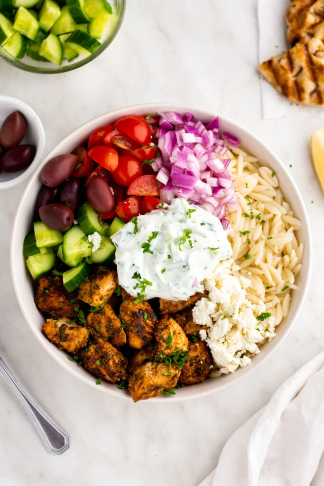

Go to index

These Chicken Gyro Bowls take all the flavor and ingredients from the traditional Greek sandwich and turn them into a quick and easy, healthy dinner! Marinated chicken, fresh vegetables, feta, and tzatziki all piled onto a bed of rice.
Ingredients
Chicken Marinade
- 1/4 cup plain Greek yogurt, low fat or full fat are best
- 2 tablespoons fresh lemon juice
- 2 cloves of garlic, grated
- 2 tablespoon chopped flat leaf parsley
- 1 tablespoon olive oil
- 1 1/2 teaspoons dried oregano
- 1/2 teaspoon smoked paprika
- 1/2 teaspoon ground cumin
- 1/2 teaspoon ground coriander
- Salt and freshly ground black pepper to taste
- 1 1/4 pounds boneless skinless chicken breasts, cut into bite sized pieces
Tzatziki Sauce
- 1 cup shredded cucumber, you can also dice the cucumber
- 1 1/2 cups plain Greek yogurt, non-fat, 2%, or whole
- 2 tablespoons fresh lemon juice
- 1 tablespoon chopped fresh dill
- 1/2 teaspoon grated garlic, 1 teaspoon if you like it extra garlicy
- Salt and freshly ground black pepper to taste
Additions
- 1 cup quartered cherry tomatoes
- 1 cup diced cucumber
- 1/4 cup diced red onion
- 1/3 cup kalamata olives
- 1/2 cup crumbled feta cheese
- 2 cups cooked brown rice
Instructions
- Start by cooking the rice. While the rice cooks combine the Greek yogurt, lemon juice, garlic, parsley, olive oil, and dried spices in a bowl. Add in the cubed chicken and let it marinate for 30-60 minutes.
- While the chicken marinates make the tzatziki sauce. Combine Greek yogurt, shredded cucumber, lemon juice, garlic, and fresh dill. Be sure to squeeze as much of the liquid out of the cucumbers as you can. Stir everything together and refrigerate until ready to serve.
- Chop the cucumber, tomatoes, olives, and red onion.
- In a large skillet, add some olive oil and when it’s hot throw in the chicken. Let it cook for several minutes before flipping it over. This will allow it to brown and get a light crust on the outside.
- Once the chicken is cooked through remove it from the heat and assemble the bowls.
- Fill the bowl with rice and then top it with some of the chicken, cucumbers, red onion, tomatoes, kalamata olives, crumbled feta, and a big dollop of tzatziki sauce.
Source: Chicken Gyro Bowl